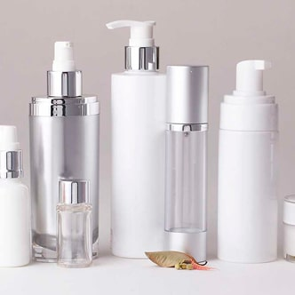

Fiatalítás a genetika szintjén
-
Hatféle ránccal is megbirkózik, beleértve a stressz okozta ráncokat is
-
Visszaállítja a vékony epidermisz víz-lipid egyensúlyát
-
Könnyed fiatalító fátylat alkot, feszesíti és kisimítja a bőrt
-
Felébreszti és aktiválja a bőr receptorait, amelyek funkciói az idő múlásával rendszerint alább hagynak
-
Célzott hatást fejt ki azokra a bőrfelületekre, amelyek vesztettek fiatalságukból
A szépség a korral fakulni kezd
Az életkor különbözőképpen jelenik meg az arcokon. A túlsúly és a helytelen bőrápolás csak súlyosbítja a helyzetet.
Fáradt típus
Az izomtónus csökkenése jellemzi, a bőr fakóvá és petyhüdté válik. A nevető ráncok és a könnycsatorna barázdái jól láthatók, a szájzugok lefelé konyulnak, fáradtság vagy álmosság hatása mutatkozik az arcon.
Az ilyen típusú öregedés elleni küzdelemben az aloe kivonat meglehetősen hatékony. Az aloe olyan anyagokat tartalmaz, amelyek képesek növelni a fibroblasztok aktivitását, valamint a kollagén és az elasztin termelését a bőrben. Az aloe bőrön való mindennapos használata feszessé és rugalmas teszi a bőrt.


Deformációs típus
A leggyakoribb öregedési típus. A nagyobb testalkatú, vegyes vagy zsíros bőrű, kövérségre hajlamos emberekre jellemző.
A szubkután zsírréteg észrevehetően deformálja a kontúrokat, megváltoztatja az arc ovális vonalát. Az izmok elsüppednek, a bőr petyhüdtté válik. A nevetőizmok határozottak, gyakori a toka, a lógó szemhéjak, a nyakon és a dekoltázson megjelenő redők. Ugyanakkor van egy előnye is ennek a típusnak, a mély ráncok és a pigmentáció nem jellemző a kor előrehaladtával.
Aludjon felpócozott párnákon, figyeljen a testsúlyára, és ami a legfontosabb, megfelelően ápolja arcát. Az édesgyökér és az avokádóolaj kiválóan alkalmas az ilyen típusú öregedés esetén. Ez a két összetevő minimalizálja az mimikai ráncokat és egyenletessé teszi a bőr tónusát. Normalizálja az intracelluláris sejteket folyamatait és a zsíregyensúlyt.
Az édesgyökér és az avokádóolajban található magas A-vitamin mennyiség akár 100% -ig is növelheti az öregedésgátlók hatékonyságát.

Izmos típus
Erre a típusra az ázsiai megjelenés jellemző. Ennek a típusnak fejlettek az arcizma, de a szubkután zsír fejlettsége nem az igazi az esetében.
A bőr pigmentációs rendellenességei, a szemhéjak lógása és ráncosodása, markáns nevetőráncok és az ajkak sarkainak megereszkedése jellemzi.
Az ilyen módon öregedő bőr nem termel elegendő hialuronsavat és kevés kollagént tartalmaz. Az arany kolloid segít kompenzálni ezen anyagok hiányát. Behatol az epidermisz keratinrétegébe, növeli a vért keringést és felgyorsítja a sejtmegújulás folyamatait. Visszaállítja a bőr rugalmasságát és intenzív regenerációt indít el, amely lehetővé teszi, hogy rövid időn belül látható eredményeket érjen el.


Apró ráncokkal teli
típus
Ennek a típusnak a képviselői hajlamosak a ráncok korai megjelenésére. A szubkután zsír nem megfelelő módon fejlett, így nem tudja megvédeni a bőrt az olyan problémáktól, mint a bőr megereszkedése, vagy az arc vonalainak elmosódása.
A transzepidermális réteg nedvességvesztésének megelőzése érdekében olyan termékek használata ajánlott, amelyek hidratálják a bőrt, valamint azok a termékek javasoltak, amelyek elsődleges célja a sejtek anyagcseréjének stimulálása, a száraz és dehidratált bőr helyreállítása és az antioxidánsok általi védelem biztosítása. A shea vaj kiválóan alkalmas erre a feladatra. Aktiválja a kollagén termelését, amely lehetővé teszi az arc bőrének helyreállítását és fiatalítását, megakadályozza annak öregedését. A shea vaj intenzíven hidratálja a bőrt, felgyorsítja a sejtek cserélődését, feszessé és üdévé teszi a bőrt.


kapja vissza fiatalságát
Intenskin
Fiatalság
INTENSKIN —
luxus bőrápolás
az otthonában
A INTENSKIN otthon használható fiatalító termék megalkotásánál, figyelembe vették az archám felépítésének sajátosságait, aminek köszönhetően úgy fejlesztették ki, hogy az öregedés mind a négy típusa esetén hatékonyan fiatalíthassa meg a bőrt.
-
Megelőzésre alkalmas
Annak érdekében, hogy a bőr ne öregedjen, olyan építőanyagokra van szüksége, amelyek az életkor előrehaladtával nem elegendő mennyiségben termelődnek. A krém összetevőinek alacsony molekulájú összetétele pillanatok alatt megoldja ezt a problémát.
-
Megelőzésre alkalmas
Annak érdekében, hogy a bőr ne öregedjen, olyan építőanyagokra van szüksége, amelyek az életkor előrehaladtával nem elegendő mennyiségben termelődnek. A krém összetevőinek alacsony molekulájú összetétele pillanatok alatt megoldja ezt a problémát.
-

Többé nem állapítható meg arca alapján a kora
A szarkalábak, az arcon lévő finom ráncok és még a mélyebbek is halványodni kezdenek, ha a INTENSKIN krémet használja. Rendszeresen használja a krémet, és idővel teljesen lenyűgözi majd.
-

Több terméket is helyettesít
A INTENSKIN nappali és éjszakai krémként is használható, valamint tápláló és hidratáló krémként is alkalmazható. Az állaga elég könnyű ahhoz, hogy smink alatt is használhassa, és a készítmény maximálisan tele van mikroelemekkel, amelyek éjszaka kettős erővel fejtik ki hatásukat.


Az INTENSKIN összetevői
Hogy felvegyük a harcot a bőr fakulásával és annak öregedésével a legjobb, ha a használt termékeket és az eljárásokat egyedileg választjuk ki, figyelembe véve az öregedés típusát, a bőr jellemzőit és az örökletes tényezőket. Vagy válassza a INTENSKIN krémet. Ez egy elveiben teljesen új professzionális megközelítése a bőrfiatalításnak.
Shea vaj
Jó öregedésgátló hatása van: felfrissíti a bőrt és rugalmassá teszi. Tápláló, enyhíti a bőr szárazságát és a hámlást, véd a negatív környezeti hatások ellen, helyreállítja a lipidhiányt.

Arany kolloid
Behatol az epidermisz keratinrétegébe, fokozza a vérkeringést és felgyorsítja a sejtek megújulási folyamatait. Visszaállítja a bőr rugalmasságát és beindítja az intenzív regenerációt.
A INTENSKIN alkalmazkodik a bőrtípusához és az öregedés különböző típusai esetén is hatékony, segít megoldani a meglévő problémákat, vagy megállítani a bőr öregedését és így visszafordítani az idő kerekét. A INTENSKIN hatékonyságával csak az injekciós kozmetikai kezelések vehetik fel a versenyt.
Avokádóolaj
Sejtszinten serkenti a megújulási folyamatot, lassítja az öregedési folyamatokat, kisimítja a ráncokat. Hidratálja, puhítja és táplálja a bőrt, normalizálja a faggyúmirigyeket működését.
Aloe
Segít megvédeni a bőrt a környezet negatív hatásaitól és oxigénnel tölti fel a bőrt. Stimulálja a fibroblasztokat, a kollagén és elasztin szintézisét, így a bőr megjelenése feszes és egészséges marad.
Szakértői vélemény
Az én feladatom a bőrápolási termékek kiválasztása és a termékek tanulmányozása. Új termékeket tesztelek különböző bőrtípusokon, hogy aztán a megfelelő termékeket ajánlhassam a pácienseknek. Bizonyos esetekben a tesztelt krém káros hatással van az egyik bőrtípusra, de egy másik bőrtípusnál hatékony. Ez is bizonyítja azt a közhelyes mondást, miszerint ami az egyik bőrtípusnak megfelel, az ellenjavallt lehet a másik számára.
Az innovatív kozmetológia viszont professzionális, minden bőrtípusra alkalmas arcápolási terméket fejlesztett ki. A INTENSKIN egy olyan krém, amely az életkorral összefüggő változásokkal és a fakuló bőrrel veszi fel a harcot. A fiatalítás genetikai szinten történik. A bőr receptorai, amelyek funkciói az idő múlásával rendszerint alább hagynak, a krém hatására aktiválódnak. A kollagén szintézisét belülről stimulálják. A krém alkalmas a bőr korai öregedésének megelőzésére.
Ha nem akar egy csomó időt és pénzt pazarolni a az Ön számára megfelelő, személyre szabott termékek kiválasztásával, vagy nem akar az injekciók után hosszú és kellemetlen rehabilitációs időszakon átesni, de látható eredményeket szeretne, akkor a INTENSKIN krém Önnek való.
Visszajelzések
nika_u A bőr mindig nehéz volt, és helytelenül gondoztam. Életemben először jártam hivatásos kozmetikusnál nemrégiben elmagyarázta nekem, hogy a típusom egy teljesen más típusú ellátást igényel, amelyet már megszoktam. Az agyagmaszkokat alginálmaszkokra cseréltem, szulfátmentes szappannal kezdtem tisztítani az arcomat. Minden drága doboz krémmel a tömegpiacról. Az eredmény elképesztő: az arc frissnek és hidratáltnak néz ki, a ráncok kisimulnak.
bella_sun66 Számomra tökéletes a mindennapi arcápoláshoz. A bőröm szemmel láthatóan ki volt száradva, az arcom folyton fáradtnak tűnt. Most a bőröm puha, jól táplált, és feszes. A kozmetikusom is elégedett az eredménnyel. Nem fogy gyorsan. Nagyon sokáig elég.
KÉRJÜK, FIGYELEM!
A kívánt eredmény eléréséhez szükséges INTENSKIN adagok száma, egyénileg eltérhet.
Fiatalítás a genetika szintjén
-
Hatféle ránccal is megbirkózik, beleértve a stressz okozta ráncokat is
-
Visszaállítja a vékony epidermisz víz-lipid egyensúlyát
-
Könnyed fiatalító fátylat alkot, feszesíti és kisimítja a bőrt
-
Felébreszti és aktiválja a bőr receptorait, amelyek funkciói az idő múlásával rendszerint alább hagynak
-
Célzott hatást fejt ki azokra a bőrfelületekre, amelyek vesztettek fiatalságukból
kamelia71 Az egyik kedvenc krémem. A használat megkezdése után pár nappal a bőröm ragyogni kezdett, megtelt nedvességgel, kellemes tapintásúvá vált. Azon kaptam magam, hogy folyamatosan simogatom. És nincs tőle zsíros fénylés, nekem ez nagyon fontos. Nem először rendelek., És még biztosan fogok rendelni a jövőben is.